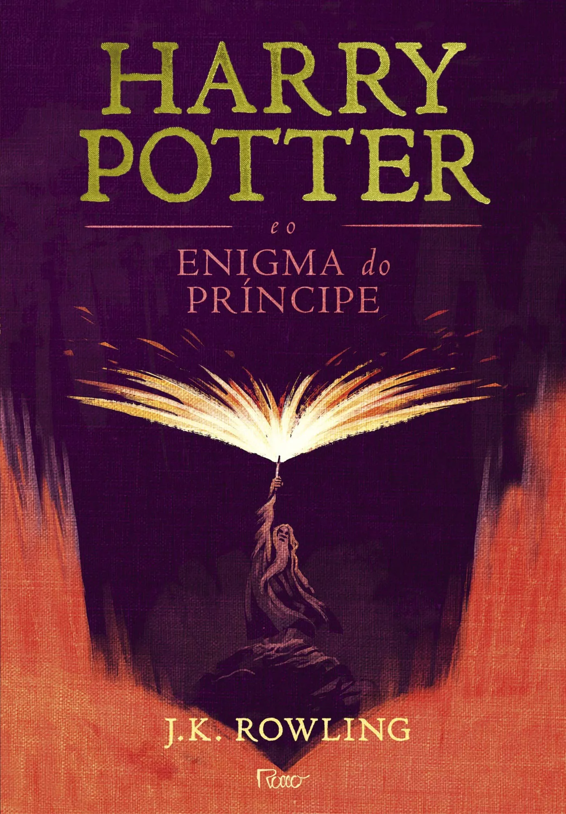

Harry Potter e o Enigma do Príncipe é o sexto livro da série e acompanha Harry Potter em seu sexto ano em Hogwarts, enquanto o mundo bruxo vive sob a ameaça crescente de Lord Voldemort. Durante o ano, o diretor Alvo Dumbledore passa a ensinar Harry sobre o passado de Voldemort, mostrando memórias que revelam como ele se tornou tão poderoso e como pode ser derrotado. Ao mesmo tempo, Harry encontra um antigo livro de poções que pertenceu a alguém chamado “Príncipe Mestiço”, que o ajuda a se destacar nas aulas, mas também levanta dúvidas sobre a identidade e as intenções desse misterioso dono. Enquanto isso, Draco Malfoy demonstra um comportamento estranho e parece estar envolvido em algo perigoso. O ano termina com uma grande tragédia que muda tudo e deixa claro que a guerra contra Voldemort está mais próxima e mais mortal do que nunca.